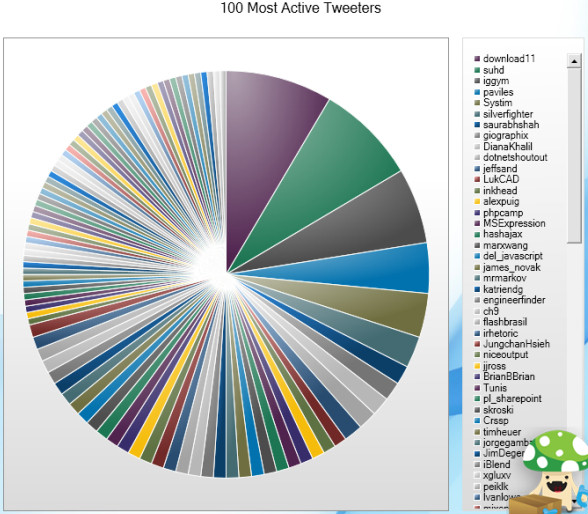

<!DOCTYPE html><html><head><meta charset="utf-8"><meta name="viewport" content="width=device-width, initial-scale=1, maximum-scale=1"><title>Analytic Board</title><link rel="stylesheet" type="text/css" href="bower_components/prism/themes/prism-tomorrow.css"><link rel="stylesheet" type="text/css" href="styles/main.css"></head></html><body><article><section class="white"><h1>UX 101</h1><div></div></section><section class="white"><div></div><h1>Diana Blandón</h1><h1>UX Designer</h1><h2>@dibland</h2></section><section class="gray"><div></div><h1>Jaime Andrés García</h1><h2>Data Visualization Developer</h2><h2>@analyticboard</h2><h2>@sw_advisor</h2></section><section class="green"><h1>¿ Qué es UX?</h1><h2>Involucra los comportamientos, actitudes y emociones de una persona respecto al uso de un producto, sistema o servicio (Wikipedia, 2015)</h2><h1>... Pero más que eso es como crear un nuevo lenguaje ...</h1></section><section class="white"><h2>Cambio de Sexo en el Lenguaje de Frutas y Flores</h2></section><section class="red"><h1>¿Por qué necesitamos personas que trabajen en UX?</h1></section><section class="white"><h1>Malas Experiencias de Usuario</h1></section><section class="white"><h1>¿Qué Switch hace qué?</h1></section><section class="white"><h1>Aceptar a la izquierda o la derecha</h1></section><section class="white"><h1>Tortas!</h1></section><section class="white"><h1>Adivina ¿Quién es?</h1><a href="http://criticalpathproject.com/" target="_blank"></a></section><section class="white"><h1>Aprendamos sobre Jarras</h1><a href="http://dh.ncl.ac.uk/Identefact/Greek%20Pots/album/slide.html" target="_blank"></a></section><section class="blue"><h1>¿Qué tipo de trabajos existen en el campo de UX? (Fuente: onwardsearch.com)</h1></section><section class="blue"><h1>User Researcher</h1><h2>- Estudia el comportamiento del usuario</h2><h2>- Participa en todas las etapas del proceso</h2><h2>- Realiza análisis de usuarios y tareas</h2><h2>- Sintetiza los hallazgos de las investigaciones</h2></section><section class="blue"><h1>Usability Analyst</h1><h2>- Identifica problemas de usabilidad</h2><h2>- Evaluación y Testeo</h2><h2>- Comunica acciones para mejorar la experiencia del usuario</h2></section><section class="blue"><h1>Information Architect</h1><h2>- Determinan como la información debe ser organizada y presentada a los usuarios</h2><h2>- Crear wireframes, diagramas de procesos, especificaciones y prototipos</h2><h2>- Aplicar User Personas y Escenarios para entender procesos y comportamientos</h2></section><section class="blue"><h1>Interaction Designer</h1><h2>- Establece conceptos de interacción</h2><h2>- Creación de prototipos rápidos para ilustrar la aplicación</h2><h2>- Copera con el diseñador visual para crear el diseño de la solución</h2></section><section class="blue"><h1>Visual Designer</h1><h2>- Convierte los wireframes y prototipos en diseño visuales</h2><h2>- Sus diseños son amigables con el usuario y coherentes con la marca</h2><h2>- Realiza diseños que atraen, son usables y efectivos</h2><h2>- Valida la efectivida del diseño</h2></section><section class="blue"><h1>Ux Designer</h1><h2>- Realiza todos los procesos mencionados arriba</h2><h2>- Enfoque colombiano</h2></section><section class="green"><h1>Algunos esfuerzos en Colombia relacionados con la UX</h1></section><section class="white"><h1>Usarte.co</h1></section><section class="white"><h1>Día de la Usabilidad</h1></section><section class="white"><h1>Ux Medellín</h1></section><section class="thanks"><div class="tint"><h1>Muchas gracias</h1></div></section></article><script src="bower_components/bespoke.js/dist/bespoke.min.js"></script><script src="bower_components/bespoke-bullets/dist/bespoke-bullets.min.js"></script><script src="bower_components/bespoke-scale/dist/bespoke-scale.min.js"></script><script src="bower_components/bespoke-hash/dist/bespoke-hash.min.js"></script><script src="bower_components/bespoke-progress/dist/bespoke-progress.min.js"></script><script src="bower_components/bespoke-state/dist/bespoke-state.min.js"></script><script src="bower_components/bespoke-forms/dist/bespoke-forms.min.js"></script><script src="bower_components/prism/prism.js"></script><script src="scripts/main.js"></script></body>